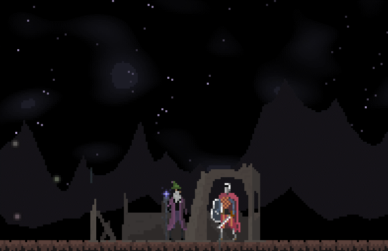
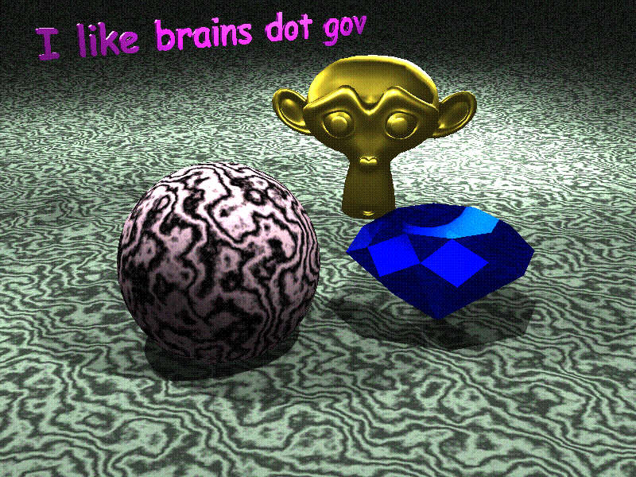

Software and video game developer. I also do CGI. You can check out my github here.
I do have some old projects available on PMC.
I have more recently worked on a public server called Thbopica. You can join (or start it up) at thbopica.minefort.com.
Note from the future: nobody plays this server any more.
I have played on the Omagacraft server some though. Season 4 just ended.
I publish my video games on itch.io, here's my page.
Most of my projects were coded in python and packaged with pyinstaller; thus, your computer will probably think they are viruses, but you could just run the source code if that makes you feel better.
Current titles:
I have more games, these are just the ones that have taken the most time to create.
Here's a game I'm sort of working on:

Check out my (in progress) 6502 emulator here. During the course of this project, I accidentally learned some 6502 assembly while exploring low level architecture.
Note from the future: I created another one of these
I've pretty much done a lot of very dumb things in the realm of graphics, slowly improving over time.
I've tried Peter Shirley's Ray Tracing in One Weekend book and made this in Python:

From this project I have gained the knowledge that it is not smart to write a raytracer in Python.
In fact though, it is fairly fun and difficult to create a 3D renderer purely in C++:

Also, along the lines of that renderer, obsessing over Lambertian Diffuse is not uncommon.
Also, here's one of my best CGI creations made in Blender:
This took ten days and was a lot of fun...
Here's a 90s style render I made on 9/27/24:
It seems like my graphics section is fairly large. I hope that does not make a statement. I might need to dedicate a page purely to graphics in the future...
Website last updated Tue Nov 5 16:17:15 2024 by Thbop.